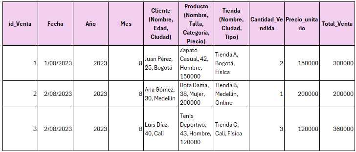
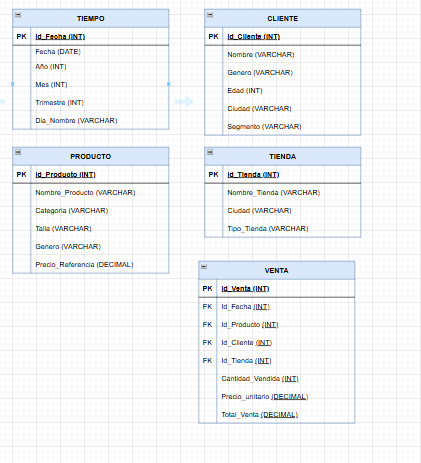
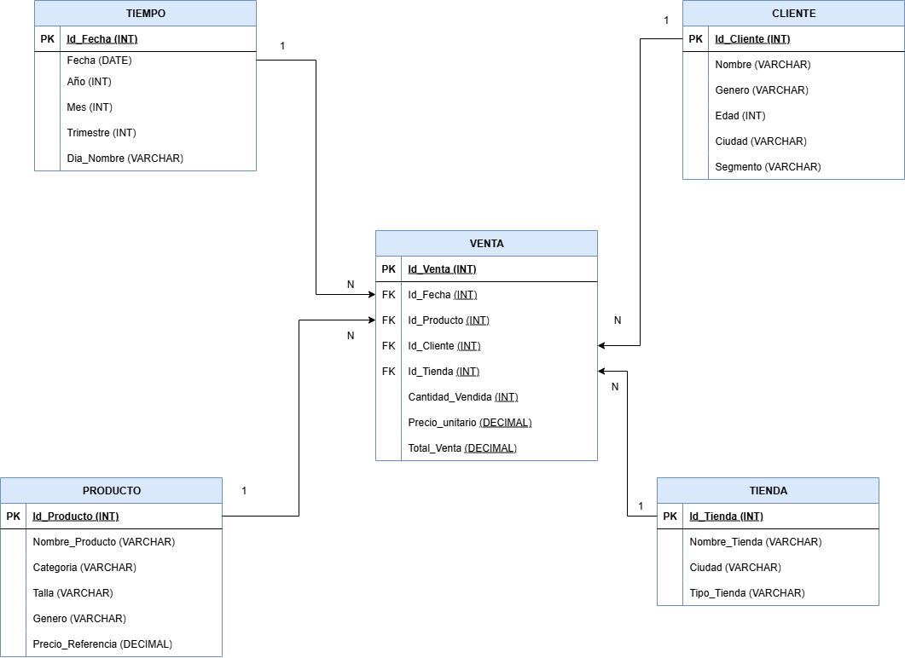

¡Descubre cómo organizar datos como un experto! Esta página te enseña las formas normales (1FN, 2FN, 3FN) con ejemplos divertidos de una tienda de zapatos. ¡Explora, aprende y juega con los detalles!
Imagina que tienes una lista de compras en una hoja de papel donde todo está escrito en una sola columna larga: nombres de clientes, fechas, productos, precios... todo mezclado. Esto es como una base de datos sin normalizar. La Primera Forma Normal (1FN) es como dividir esa lista en columnas separadas en una tabla, asegurándonos de que cada celda contenga solo un valor simple y único, sin listas o grupos repetidos dentro de una misma celda. Por ejemplo, en lugar de poner "Juan Pérez, 25 años, Bogotá" en una sola celda, lo dividimos en columnas separadas para nombre, edad y ciudad. Esto hace que la información sea "atómica", es decir, indivisible, como átomos en la química.
En nuestra base de datos de ventas de zapatos, empezamos con una tabla grande que incluye todo: detalles de la venta, el cliente, el producto, la tienda y la fecha. Aunque esto parece simple al principio, causa problemas como repetir la misma información muchas veces (por ejemplo, si un cliente compra varios zapatos, su nombre y edad se escriben una y otra vez). Esto no solo ocupa más espacio, sino que puede llevar a errores: ¿qué pasa si actualizas la edad de un cliente en una fila pero olvidas las demás? ¡Inconsistencias por todos lados!
El objetivo principal fue eliminar cualquier valor multivaluado. Si una celda tenía varios datos separados por comas (como "zapatos, botas, tenis"), lo convertimos en filas separadas o columnas individuales. En este caso, la tabla ya estaba cerca de la 1FN, pero aseguramos que cada columna represente un solo atributo. Sin embargo, todavía hay redundancias porque la información no está separada en temas lógicos. Esto resuelve problemas básicos de almacenamiento, pero deja anomalías: no puedes agregar un cliente nuevo sin una venta, y eliminar una venta podría borrar datos importantes del cliente.

En la imagen arriba, ves cómo se ve la estructura inicial. ¡Pásale el mouse para un efecto sorpresa!
¡Sigue explorando y diviértete aprendiendo a ser un maestro de datos!
Ahora que tenemos nuestra tabla organizada en columnas simples (gracias a la 1FN), notamos que hay repeticiones. Por ejemplo, si el mismo zapato se vende muchas veces, su precio y descripción se repiten en cada fila. La Segunda Forma Normal (2FN) resuelve esto separando la información en tablas más pequeñas y especializadas. Cada tabla se enfoca en un tema: una para clientes, otra para productos, otra para fechas, etc. Usamos "claves" (como números ID únicos) para conectarlas, como hilos que unen piezas de un rompecabezas.
En términos simples, 2FN asegura que cada pieza de información dependa completamente de la "clave principal" de su tabla. Si algo depende solo de parte de la clave (en tablas con claves compuestas), lo movemos a una nueva tabla. En nuestra tienda de zapatos, creamos tablas separadas para "Tiempo" (fechas), "Cliente", "Producto", "Tienda" y "Venta" (que une todo). Así, el nombre de un cliente se guarda solo una vez, y en la tabla de ventas solo ponemos su ID. Esto reduce el espacio y evita errores al actualizar datos.
Identificamos "dependencias parciales": por ejemplo, la edad de un cliente depende solo del cliente, no de la venta específica. Así que movimos esos detalles a su propia tabla. Ahora, si un producto cambia de precio, lo actualizas en un solo lugar. Esto hace la base más eficiente, como organizar tus fotos en álbumes temáticos en lugar de mezclar todo en una caja grande. Sin embargo, aún hay dependencias "transitivas" (como un campo que depende de otro campo no clave), que resolveremos en la siguiente forma.
Estructura en 2FN (Esquema con Tablas Separadas): Aquí mostramos los campos de cada tabla para que veas cómo se divide la info.
Tabla TIEMPO:
| Campo | Tipo |
|---|---|
| Id_Fecha | INT (PK) |
| Fecha | DATE |
| Año | INT |
| Mes | INT |
| Trimestre | INT |
| Dia_Nombre | VARCHAR |
Tabla CLIENTE:
| Campo | Tipo |
|---|---|
| Id_Cliente | INT (PK) |
| Nombre | VARCHAR |
| Genero | VARCHAR |
| Edad | INT |
| Ciudad | VARCHAR |
| Segmento | VARCHAR |
Tabla PRODUCTO:
| Campo | Tipo |
|---|---|
| Id_Producto | INT (PK) |
| Nombre_Producto | VARCHAR |
| Categoria | VARCHAR |
| Talla | VARCHAR |
| Genero | VARCHAR |
| Precio_Referencia | DECIMAL |
Tabla TIENDA:
| Campo | Tipo |
|---|---|
| Id_Tienda | INT (PK) |
| Nombre_Tienda | VARCHAR |
| Ciudad | VARCHAR |
| Tipo_Tienda | VARCHAR |
Tabla VENTA:
| Campo | Tipo |
|---|---|
| Id_Venta | INT (PK) |
| Id_Fecha | INT (FK) |
| Id_Producto | INT (FK) |
| Id_Cliente | INT (FK) |
| Id_Tienda | INT (FK) |
| Cantidad_Vendida | INT |
| Precio_unitario | DECIMAL |
| Total_Venta | DECIMAL |

La imagen muestra cómo las tablas se conectan con flechas, representando relaciones. ¡Pásale el mouse para un efecto mágico!
¡Sigue jugando y conviértete en un ninja de las bases de datos!
Con las tablas separadas en 2FN, todo parece mejor, pero aún hay "dependencias ocultas". Por ejemplo, en la tabla de Tiempo, el "Trimestre" se calcula directamente del "Mes" (enero-marzo es trimestre 1), no de la clave principal. Esto es una dependencia transitiva: A depende de B, y B depende de C, así que A depende indirectamente de C. La Tercera Forma Normal (3FN) elimina estas dependencias moviendo campos derivados a tablas nuevas o eliminándolos si se pueden calcular en el momento.
En simple: 3FN asegura que cada campo en una tabla dependa solo de la clave principal, no de otros campos no clave. Esto hace la base aún más limpia y evita anomalías. En nuestra base de ventas, revisamos cada tabla y removemos campos como "Trimestre" o "Día de la Semana", porque se pueden obtener automáticamente de la fecha usando fórmulas. Así, la base es más ligera y consistente: si cambias un mes, no tienes to preocuparte por actualizar el trimestre manualmente.
Analizamos dependencias transitivas y las resolvimos. Por ejemplo, en la tabla TIEMPO, eliminamos "Trimestre" (calculable como (Mes-1)/3 +1) y "Dia_Nombre" (obtenible con funciones de fecha). Campos como "Total_Venta" en VENTA podrían calcularse (Cantidad * Precio), pero a veces se mantienen por velocidad en sistemas grandes. Esto optimiza el almacenamiento y previene errores, como tener un mes de febrero en trimestre 2 por un descuido.
Estructura en 3FN (Esquema Optimizado): Nota cómo algunas tablas se simplifican.
Tabla TIEMPO (Modificada para eliminar transitivas):
| Campo | Tipo |
|---|---|
| Id_Fecha | INT (PK) |
| Fecha | DATE |
| Año | INT |
| Mes | INT |
Las otras tablas (CLIENTE, PRODUCTO, TIENDA, VENTA) se mantienen similares a 2FN, ya que no tenían más transitivas evidentes.

La imagen ilustra la estructura final, más limpia y conectada. ¡Pásale el mouse para un toque mágico!
¡Sigue la aventura y sé el rey de la organización de datos!